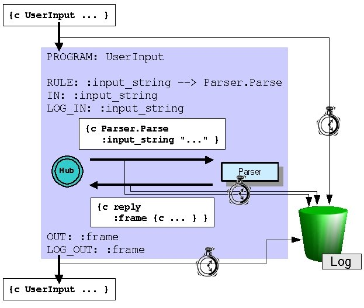
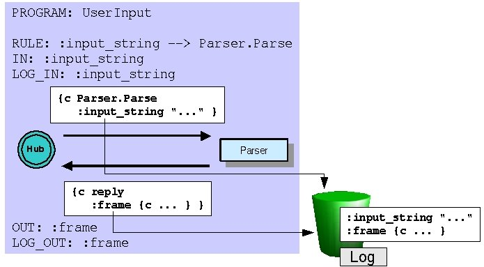
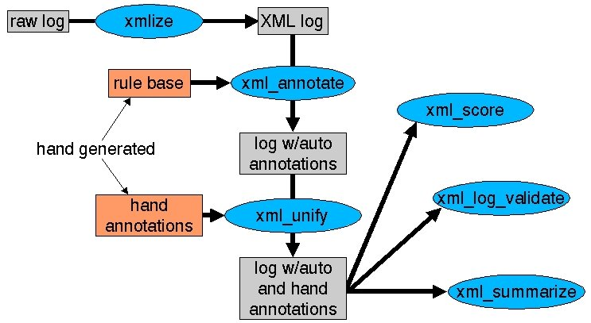

| License / Documentation home / Help and feedback |
As we've learned more and more about servers, we've seen that our knowledge covers more and more of the operation of the toy travel demo that we saw in the very beginning of this tutorial. In the final two lessons, we'll cover the remaining details of the toy travel demo, most of which have to do with the operation of the Hub.
[Logging exercise 1]Start the Parser, then the Hub, and finally the unit tester. Press "Send new message", select the first message, select "Reply required" and then OK. After the interaction, press the "Stop" button associated with the Hub pane, and then select "File --> Quit". You've now created a log.
Unix:
% process_monitor $GC_HOME/tutorial/logging/parse-server.config
Windows:
C:\> python %PM_DIR%\process_monitor.py %GC_HOME%\tutorial\logging\parse-server.config
Here's the relevant portion of the program file $GC_HOME/tutorial/logging/parse.pgm:
LOG_VERSION: "Parser, version 1"In the next few steps, we'll learn about the information in the program file which helps organize the log, and then we'll look at the log itself.;; This means that the log directory hierarchy
;; will start in the directory where the Hub is run.LOG_DIR: .
TIMESTAMP: Parse UserInput
PROGRAM: UserInput
RULE: :input_string --> Parser.Parse
IN: :input_string
OUT: :frame
LOG_IN: :input_string
LOG_OUT: :frame
LOG_VERSION: "Parser, version 1"The first line is optional. LOG_VERSION: is a directive which allows you to associate arbitrary names with your logs. These names are intended to correspond to system or program file versions, so you can keep track of what to expect in your log (for example, you may change the names of programs, dispatch functions or keys in your system, and this might affect your ability to extract the appropriate information from the logs for, say, summarization).;; ...
LOG_DIR: .
The second line is obligatory. Without a LOG_DIR: directive entry, the Hub will not create a log. The value of LOG_DIR: is where the log directory hierarchy should live. This value is interpreted relative to the directory where the Hub was started from. In this directory, the log can be found in sls/date/counter/sls-date-counter-hublog.txt, where date and counter guarantee a unique identifier for each log. (You can change the string sls by using the USER_ID: directive entry, but we won't cover this in the tutorial. See the logging reference.)
TIMESTAMP: Parse UserInputThis entry covers both program names (incoming messages) and operation names (outgoing messages). Each of these messages is recorded in the log along with a timestamp in milliseconds:

RULE: :input_string --> Parser.ParseThis process can be illustrated as follows:
IN: :input_string
LOG_IN: :input_string
OUT: :frame
LOG_OUT: :frame

These two directive entries, like IN: and OUT:, have two namespaces, sort of. The source namespace for both these directive entries is the message (message send for LOG_IN:, message return for LOG_OUT:), but the target "namespace" isn't really a namespace; all the data is written directly to the log. So you can map to different keys, or log from different namespaces, or log literals:
LOG_IN: (:string :input_string) (:user_id $in(:user_id global)) (:log_successful 1)If you log key-value pairs for a message which isn't timestamped, the message will automatically be timestamped for you.
LOGFILE_FORMAT_VERSION: 1.0You can see that both the read and send (new message and reply) for UserInput were timestamped, along with the send and read (new message and reply) for the Parse message. In both cases, the server's name and location were also recorded, as well as the token index (in this case, 1). You can also see that the :input_string key-value pair was logged, as was the :frame key-value pair.LOG_VERSION: Parser, version 1
SESSION_ID: Default
:BEGIN_UTT (-01)
[Timestamp (-01): read:GAL_MESSAGE_MSG_TYPE UI(<remote>:-1) 1 UserInput at 10:17:14.58 on 27-SEP-2001]
[Timestamp (-01): send:GAL_MESSAGE_MSG_TYPE Parser(localhost:10000) 1 Parse at 10:17:14.59 on 27-SEP-2001]
:input_string (-01): "I WANT TO FLY FROM BOSTON TO LOS ANGELES"
[Timestamp (-01): read:GAL_REPLY_MSG_TYPE Parser(localhost:10000) 1 Parse at 10:17:14.59 on 27-SEP-2001]
[Begin :frame (-01)]
{c flight
:destination "LOS ANGELES"
:origin "BOSTON" }
[End :frame (-01)]
[Timestamp (-01): send:GAL_REPLY_MSG_TYPE UI(<remote>:-1) 1 UserInput at 10:17:14.59 on 27-SEP-2001]
As for administrative information, you can see that the log contains the version we provided in the logfile, as well as a format version number (in case the format changes), and an indication of the current session (again, more on this later; for this reason, also ignore :BEGIN_UTT and the -01 that appear in the log).
We provide a set of tools to postprocess these logs in a number of ways. To illustrate this, we're going to use the "real" toy travel demo.
[Logging exercise 2]Select "Process Control --> Restart all". This will start all the servers, then the Hub, and finally two additional process monitors, one for the Audio server and one for the UI server. In the "Audio client" process monitor, press "Start". Each time you see the prompt "Hit <return> to send speech:" in the scrollable output history, press the "Input <return>" button, until the server exits. In the toy travel process monitor, press the "IOMonitor" button. You should see something like the following in the scrollable output history:
Unix csh/tcsh:
% rm -rf sls
% setenv TTDEMO $GC_HOME/contrib/MITRE/demos/toy-travel
% process_monitor $TTDEMO/toy-travel.config -- $TTDEMO/example.frames $TTDEMO/toy-travel.pgm
Unix csh/tcsh:
% rm -rf sls
% TTDEMO=$GC_HOME/contrib/MITRE/demos/toy-travel; export TTDEMO
% process_monitor $TTDEMO/toy-travel.config -- $TTDEMO/example.frames $TTDEMO/toy-travel.pgmWindows:
C:\> rmdir /S sls
C:\> set TTDEMO=%GC_HOME%\contrib\MITRE\demos\toy-travel
C:\> python %PM_DIR%\process_monitor.py %TTDEMO%\toy-travel.config -- %TTDEMO%\example.frames %TTDEMO%\toy-travel.pgm
[Toy travel scrollable output history]Select "File --> Quit" in the toy travel process monitor to end the interaction.[exec $DEMO_ROOT/bin/IOMonitor -verbosity 0 2>&1]
In session session-1001366584.434: system said "Welcome to Communicator. How may I help you?"
In session session-1001366584.434: user said "I WANT TO FLY LOS ANGELES"
In session session-1001366584.434: system said "Where are you traveling from?"
In session session-1001366584.434: user said "BOSTON"
In session session-1001366584.434: system said "American Airlines flight 115 leaves at 11:44 AM, and United flight 436 leaves at 2:05 PM"
Most of the steps in this procedure are automated. The tools convert the raw Hub log into XML, and then use a hand-generated rules file to add significant "landmarks" to the log (e.g., the :input_string value in the Parse message corresponds to the output of the recognizer). These tools add both these annotations and a set of hand annotations (such as audio transcriptions) to the log, and the result can be used for summarization, validation or scoring:

Let's examine a summary for the interaction you just performed. We've provided a set of rules to add the landmarks, but no hand annotations, so the summary will show the "recognizer output" but not the audio "transcription". We'll summarize the entire contents of the sls subdirectory, since all the tools work recursively:
[Logging exercise 3]Press "Start", and review the output. You'll see the summary of the interpreted log: when the user and system started and stopped speaking, what each of them said, and when user and system turns began and ended. When you're done examining the summary, select "File --> Quit".
Unix:
% process_monitor $GC_HOME/tutorial/logging/show-log.config
Windows:
C:\> python %PM_DIR%\process_monitor.py %GC_HOME%\tutorial\logging\show-log.config
Next: Sessions
| License / Documentation home / Help and feedback |